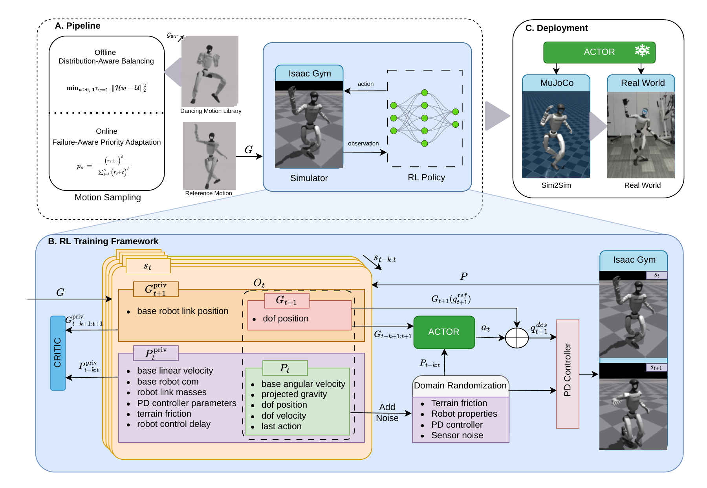

Reference-conditioned residuals
The reference supplies the desired motion. The policy learns bounded joint-target corrections for the mismatch between reference and robot dynamics.
HUMANOID CONTROL · RESIDUAL REINFORCEMENT LEARNING
Residual-Action Reinforcement Learning Enables
Robust Long-Horizon Humanoid Motion Tracking
A simple residual-action recipe for tracking long, high-energy dance references on humanoid robots.
Retargeted human motions preserve their kinematic structure, but do not always match a robot's dynamics. RobotDancing learns corrections around reference joint targets, allowing the policy to compensate for actuation, contact, latency, and retargeting errors.
One policy is trained per reference sequence. A common training and deployment recipe is reused across motions, with morphology-specific robot configurations.
Reference-conditioned residual actions meet selective control authority and complementary motion sampling.

The reference supplies the desired motion. The policy learns bounded joint-target corrections for the mismatch between reference and robot dynamics.
Bilateral hip- and knee-pitch joints receive residual corrections. Controlled mask ablations characterize the robustness–accuracy tradeoff.
Distribution-aware balancing covers rare configurations. Failure-aware prioritization revisits persistently difficult motion segments.
Jumps, spins, and high-energy dance.
Watch the complete project video.
G1 hardware trials demonstrate long-horizon tracking. H1 and H1-2 hardware clips provide qualitative feasibility evidence, including visible jitter.
Across-motion evaluation and controlled
single-motion studies answer different questions.
On dance1_subject2, G1 and H1 complete the full sequence from its initial state across three training seeds. H1-2 retains a tracking-accuracy gap under strict motion-far termination.
Frozen 10K checkpoint · 132 fixed starts per seed · mean ± 95% Student-t CI across 3 seeds.
| Platform | Fixed-grid completion | Start-zero survival |
|---|---|---|
| G1 | 97.7 ± 1.9% | 131.5 ± 0.0 s |
| H1 | 99.7 ± 1.1% | 131.5 ± 0.0 s |
| H1-2 | 64.4 ± 29.9% | 34.1 ± 1.0 s |
RobotDancing is a reusable per-sequence recipe. The residual mask remains heuristic; future work includes motion-conditioned residual gates, per-motion sampling statistics, and perception-aware tracking.
Code and models will be released upon acceptance.
Download supplementary video ↗LYRA · Design reference ↗